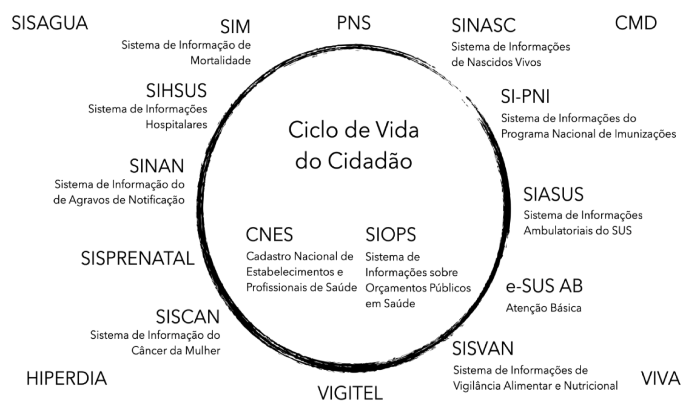

1 Introdução
Podcast do capítulo
Ouça a conversa e acompanhe a transcrição sincronizada. Áudio gerado por IA.
Acompanhar transcrição
A disponibilidade oportuna de dados confiáveis é essencial para a tomada de decisão em saúde. Sistemas de vigilância, planejamento, financiamento, regulação, assistência e avaliação dependem de registros capazes de descrever o que acontece com a população e com os serviços. Nesse contexto, os Sistemas de Informação em Saúde (SIS) são componentes centrais dos sistemas de saúde e também integram redes mais amplas de estatísticas nacionais e internacionais (ABOUZAHR; BOERMA, 2005; WHO, 2008).
O emprego do termo “sistema” indica um processo organizado, composto por instrumentos, pessoas, normas, tecnologias, fluxos e usos. Um SIS, portanto, não se resume a um banco de dados. Ele envolve a definição do evento a ser registrado, os formulários ou interfaces de entrada, as regras de validação, os caminhos de transmissão, as rotinas de consolidação, as formas de acesso e as práticas de análise que transformam registros em informação útil.
1.1 Sistemas, contextos e usos
A organização dos SIS varia entre países e também ao longo do tempo. Sua implantação costuma responder a necessidades políticas, econômicas, técnicas, assistenciais e epidemiológicas específicas. Por isso, compreender o contexto de criação e evolução de cada sistema é indispensável para interpretar suas possibilidades e limitações (WHO, 2008).
No Brasil, os SIS buscam cobrir diferentes eventos de saúde que ocorrem durante o ciclo de vida da população, bem como eventos relacionados à organização e ao funcionamento do próprio sistema de saúde. Entre esses eventos estão nascimentos, óbitos, internações, atendimentos ambulatoriais, notificações de doenças e agravos, imunizações, registros de estabelecimentos, produção assistencial e informações orçamentárias.
A Figura 1.1 apresenta as siglas de alguns dos principais SIS existentes no Brasil.

1.2 Dados, informação e conhecimento
Para utilizar adequadamente os SIS, é fundamental distinguir dado, informação e conhecimento. O dado é o elemento mais simples do sistema: um registro delimitado de uma ocorrência, como uma data, um código de município, uma causa de óbito, um procedimento realizado ou uma dose de vacina aplicada. Isolado, o dado descreve apenas uma parte do real.
A informação surge quando os dados são organizados, analisados e interpretados em relação a uma pergunta ou necessidade concreta. Uma contagem de óbitos por município, uma taxa de internação por faixa etária ou a proporção de casos confirmados entre notificações suspeitas já expressam algum nível de processamento e interpretação.
O conhecimento, por sua vez, depende da articulação entre informações, contexto, experiência e reflexão. É a partir dele que se formulam explicações, hipóteses, prioridades de ação, avaliações de desempenho e decisões de gestão (ROUQUAYROL; SILVA, 2018; SIQUEIRA, 2005).
Assim, os Sistemas de Informação em Saúde podem ser entendidos como mecanismos de coleta, processamento, análise e transmissão da informação necessária para planejar, organizar, operar e avaliar os serviços de saúde (WHO, 2000). Sua utilidade depende tanto da qualidade dos registros quanto da capacidade de interpretar esses registros de acordo com a pergunta em análise.
1.3 Escopo do livro
O objetivo deste livro é apresentar estes SIS com informações atualizadas sobre sua história, características dos dados e sua utilização, visando um melhor aproveitamento de seu potencial para a saúde pública brasileira.
Ao longo dos capítulos, cada sistema é tratado a partir de sua trajetória institucional, cobertura, unidade de análise, estrutura dos dados, formas de disseminação, usos frequentes e cuidados de interpretação. A intenção é apoiar uma leitura crítica dos dados em saúde, evitando tanto a subutilização das bases disponíveis quanto interpretações que desconsiderem seus processos de produção.
1.4 Veja também
Breve histórico da experiência brasileira — seção “Sistemas nacionais e construção do SUS”. Na edição impressa, p. 21.
Organização dos SIS — seção “Critérios de organização”. Na edição impressa, p. 29.
Eventos de saúde — seção “Do problema de saúde ao evento registrado”. Na edição impressa, p. 45.